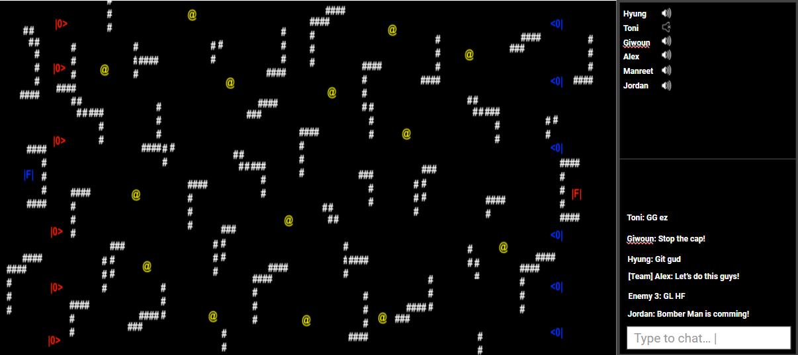

Developer Diary

January 19th, 2022
"Spint 1"
Our group had a little meeting to discuss the core mechanics of our game and to prepare for the presentation as well. We figured that making a game such as Splix would not be ideal on an interface like ncurses after 2 hours into the discussion; therefore, we collectively decided that it's best to switch our focus to something a little bit different. One of our teammate, Giwoun, suggested that we should still keep the Capture the flag game mode but remove the territory factor that we got from Splix.
A demo of what the shooting animation might look like. @Hyung Lee
We created the presentation to show it to our guest, a game designer and received some constructive criticisms for the game, and some directions on pushing the game forward.
Prototype map layout. @Hyung Lee
The chat team also had a brief meeting to discuss the protocol of our chat feature. Thanks to the brilliant Stirling and the GiJo chat protocol, we quickly formed our very first chat protocol document. The whole set also redesigned the structure of the our storage system since its current state is very unfriendly for newcomers to navigate.